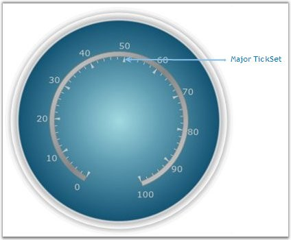

Mark ticks are used to set the tick mark values in the circular scale. Circular mark ticks provides two patterns of Tick styles. They are,
· MajorTick and
· MinorTick
These major and minor ticks are built with customization options like height and width properties. They are also shipped with some inbuilt tick shapes. The available tick shapes are listed below.
· Ellipse
· Rectangle
· Triangle
Refer to the below code snippet for adding major and minor ticks.
 Note: For implementing the ticks, we should
already have the scale in which we are going to add the ticks.
Note: For implementing the ticks, we should
already have the scale in which we are going to add the ticks.
|
[XAML]
<sfgauge:CircularGauge Height="Auto" Width="Auto" Radius="170" Name="circularGauge1" FrameType="FullCircle" Margin="3" CenterFrameFillColor="Blue" > <sfgauge:CircularGauge.Scales> <sfgauge:CircularScale x:Name="m_scale" Radius="100" StartAngle="110" GapSweepAngle="320" ScaleBarSize="5" ShadowOffset="5" Minimum="0" Maximum="100" MinorIntervalValue="2" MajorIntervalValue="10" BorderBrush="Gray" Background="Silver" Location="50,50"> <sfgauge:CircularScale.Ticks> <sfgauge:MarkTickSet TickHeight="8" TickShape="Triangle" TickStyle="MajorTick" Name="majorLabelTick" AngleChanged="majorLabelTick_AngleChanged" TickPlacementChanged="majorLabelTick_TickPlacementChanged" DistanceFromScaleChanged="majorLabelTick_DistanceFromScaleChanged" TickWidth="4" Background="Silver"/> <sfgauge:MarkTickSet TickHeight="4" TickWidth="1" TickStyle="MinorTick" Name="minorTick" AngleChanged="minorTick_AngleChanged" TickPlacementChanged="minorTick_TickPlacementChanged" TickStyleChanged="minorTick_TickStyleChanged" TickShapeChanged="minorTick_TickShapeChanged" Background="Silver" TickPlacement="Inside"/> </sfgauge:CircularScale.Ticks> </sfgauge:CircularScale> </sfgauge:CircularGauge.Scales> </sfgauge:CircularGauge> |
|
[C#]
CircularGauge circulargauge1 = new CircularGauge(); circulargauge1.CenterFrameFillColor = Colors.Blue; LayoutRoot.Children.Add(circulargauge1);
CircularScale c_scale = new CircularScale(); c_scale.Radius = 110; c_scale.StartAngle = 120; c_scale.GapSweepAngle = 300; c_scale.ScaleBarSize = 10; c_scale.Location = new Point(50, 50); c_scale.ShadowOffset = 5; c_scale.ShadowOffset = 5; c_scale.Minimum = 0; c_scale.Maximum = 100; c_scale.MinorIntervalValue = 2; c_scale.MajorIntervalValue = 10; c_scale.Background = new SolidColorBrush(Colors.LightGray); c_scale.BorderBrush = new SolidColorBrush(Colors.Blue); c_scale.BorderThickness = new Thickness(0.5); circulargauge1.Scales.Add(c_scale);
// Adding MajorTick. MarkTickSet c_majortick = new MarkTickSet(); c_majortick.TickShape = TickShape.Rectangle; c_majortick.TickWidth = 5; c_majortick.TickHeight = 20; c_majortick.DistanceFromScale = 0; c_majortick.TickStyle = TickStyle.MajorTick; c_majortick.TickPlacement = ScalePlacement.Cross; c_majortick.Background = new SolidColorBrush(Colors.Green); c_majortick.BorderBrush = new SolidColorBrush(Colors.Gray); c_majortick.BorderThickness = new Thickness(0.5); c_scale.Ticks.Add(c_majortick);
// Adding MinorTick. MarkTickSet c_minortick = new MarkTickSet(); c_minortick.TickShape = TickShape.Rectangle; c_minortick.TickWidth = 2; c_minortick.TickHeight = 10; c_minortick.TickStyle = TickStyle.MinorTick; c_minortick.DistanceFromScale = 0; c_minortick.TickPlacement = ScalePlacement.Inside; c_minortick.Background = new SolidColorBrush(Colors.Green); c_minortick.BorderBrush = new SolidColorBrush(Colors.Gray); c_minortick.BorderThickness = new Thickness(0.5); c_scale.Ticks.Add(c_minortick); |

Figure 31: Major TickSet added to the Scale